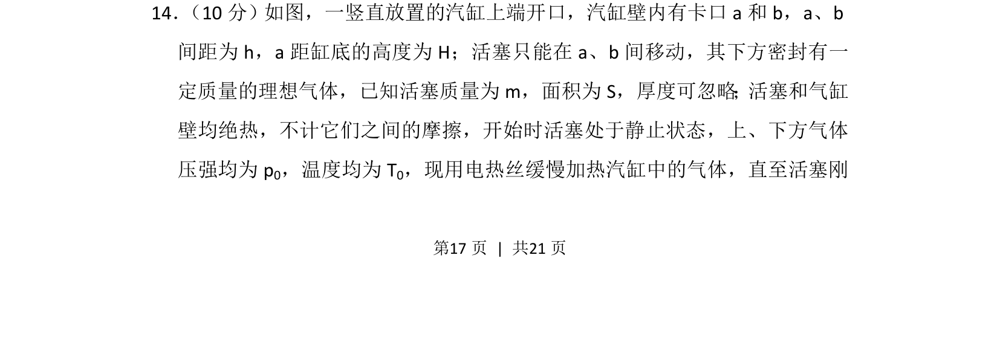
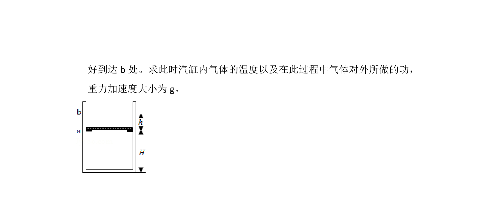
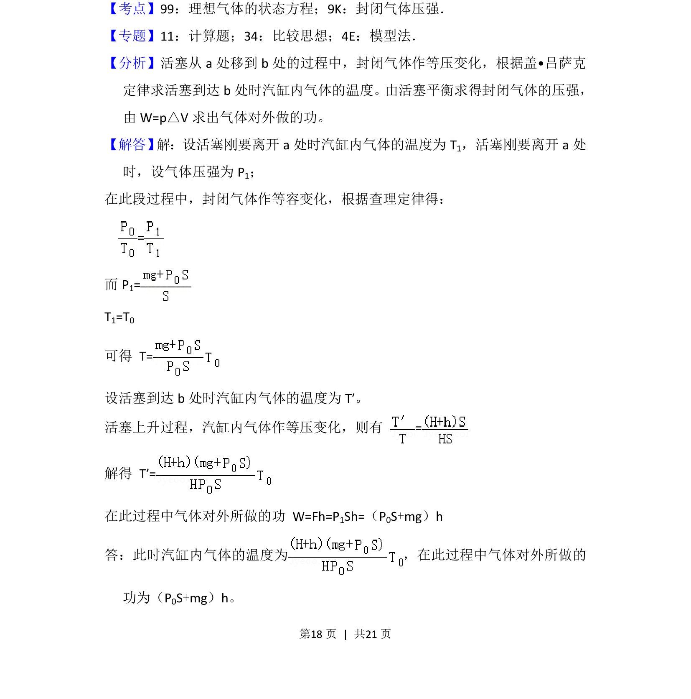

考点：理想气体状态方程 受力平衡 等容变化 等压变化


理想气体状态方程与力学平衡的综合应用，涉及等压过程与临界状态分析。

📄 原 PDF 第 17 页：
素材/真题/吉林/2008-2024·（吉林）物理高考真题/2018年高考物理试卷（新课标Ⅱ）（解析卷）.pdf
14． （10分）如图，一竖直放置的汽缸上端开口，汽缸壁内有卡口a和b，a、b 间距为h，a距缸底的高度为H；活塞只能在a、b间移动，其下方密封有一 定质量的理想气体，已知活塞质量为m，面积为S，厚度可忽略；活塞和气缸 壁均绝热，不计它们之间的摩擦，开始时活塞处于静止状态，上、下方气体 压强均为p 0，温度均为T 0，现用电热丝缓慢加热汽缸中的气体，直至活塞刚